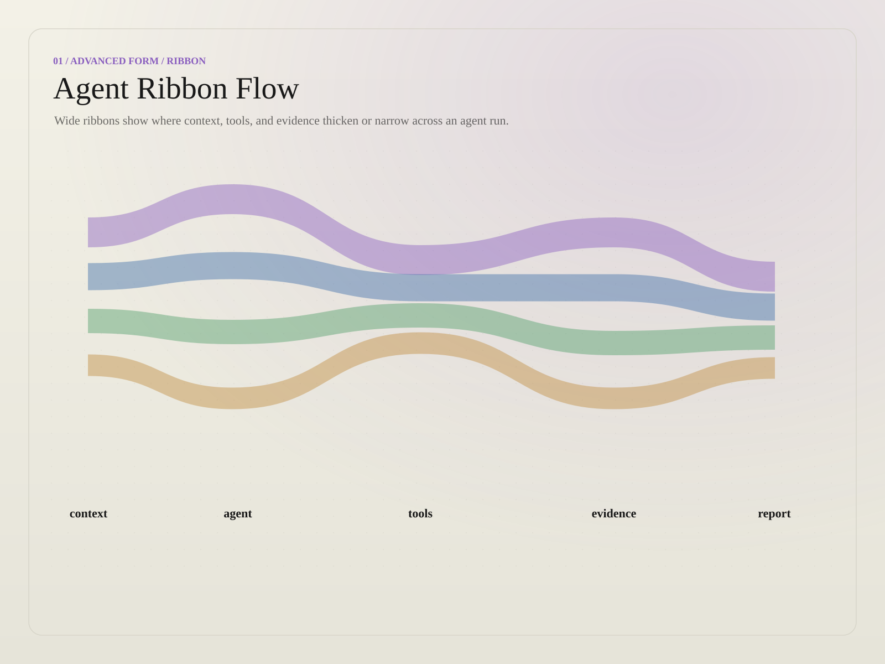
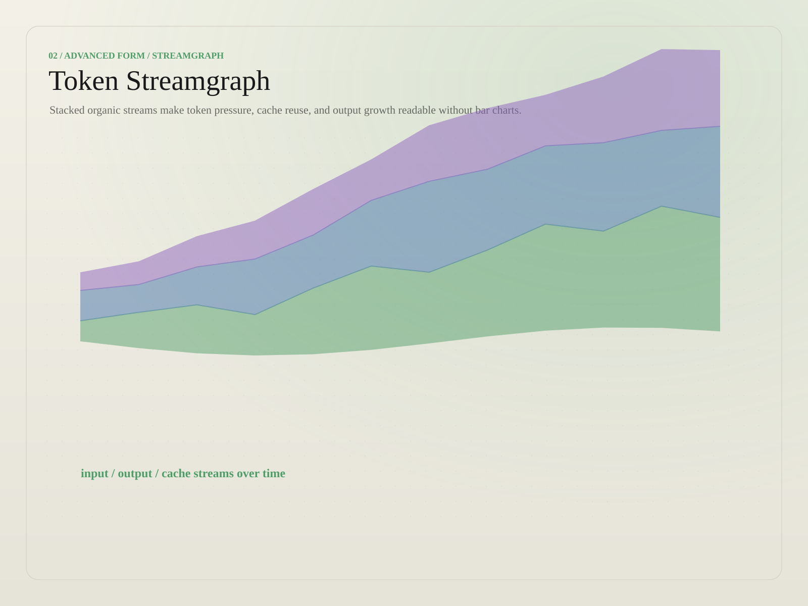
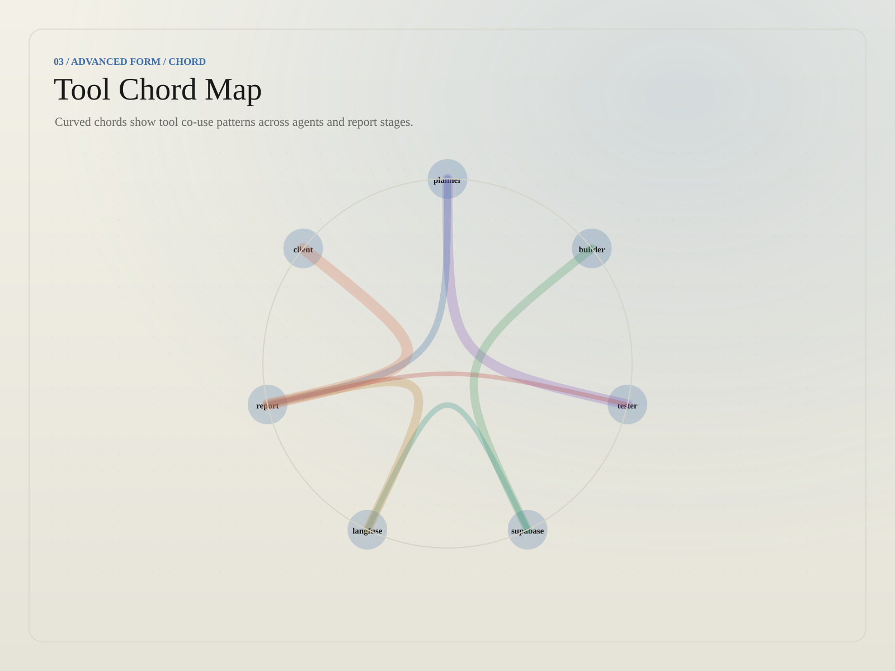
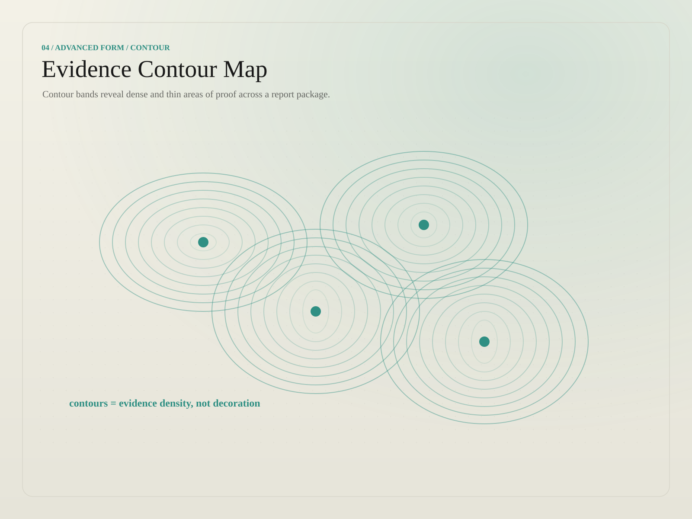
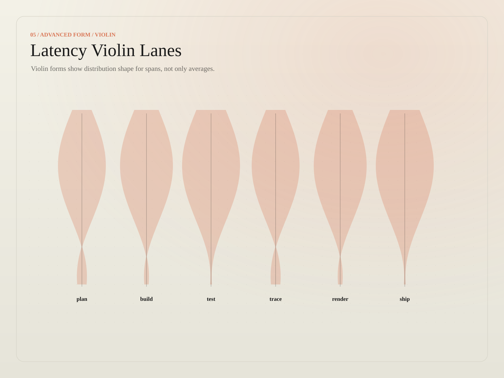
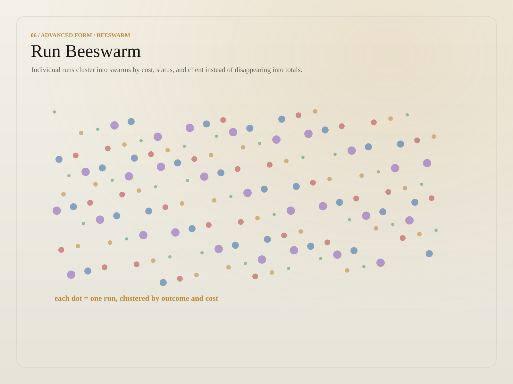
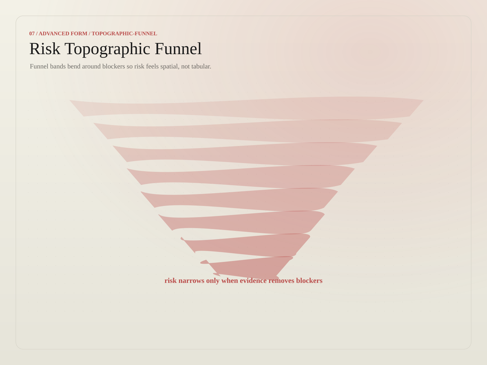
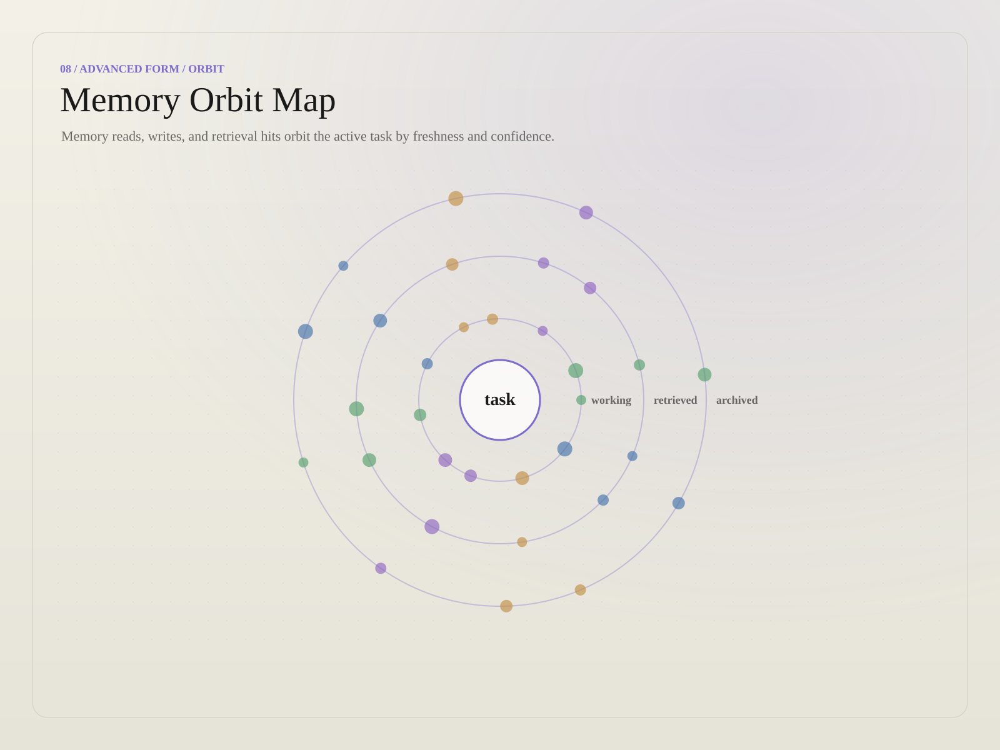
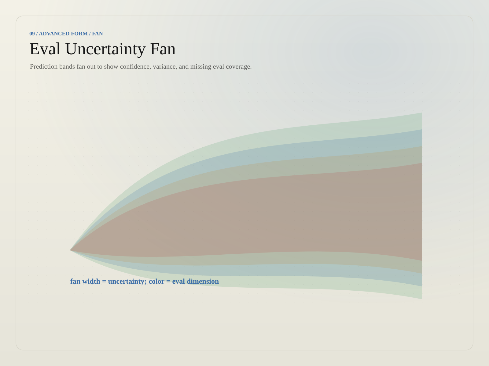
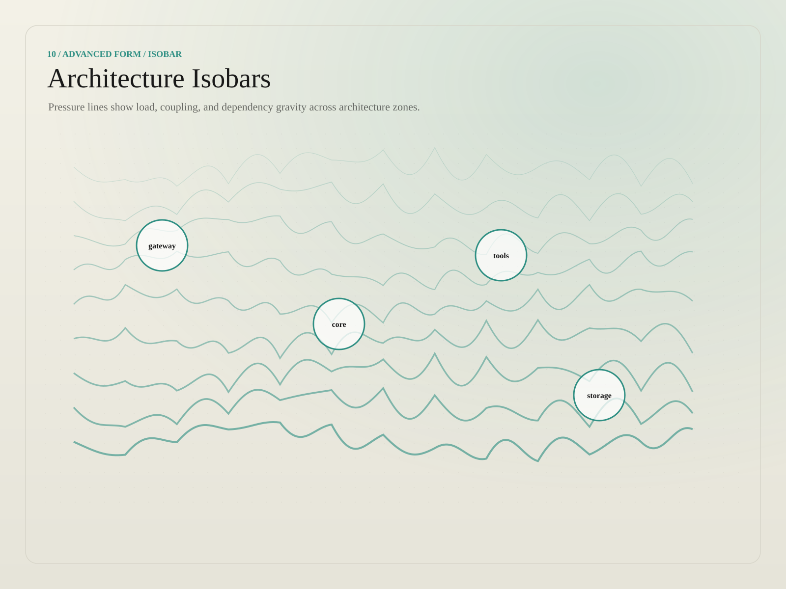

Report surfaces
Collapsible, evidence-first documents. The canonical gbauto-report.v1 shell.
Collapsible Report Template
shellThe blank report shell — topbar, left section menu (Open/Close all), collapsible <details> sections, taxonomy pills, metadata footer. Copy this to start a new report.
Vans Production Memo
exampleA real filled report — "Memo to Sreya: Vans Production & Scraping Infrastructure." Shows the surface with prose, tables, and status chips in situ.
examples/collapsible-report-mall.html ★Live rendered exemplars
Production reports rendered by the report-package / canopy pipeline (paths relative to this file).
JID5274 Weekly Summary
renderedThe authoritative gbauto-report.v1 exemplar — sibling-report nav, position-colored pills, glass TOC with word counts, metadata cards. The reference for all report styling.
Hermes Architecture & Loops
renderedSystem documentation rendered in the report surface, with live Mermaid diagrams lazy-rendered on section open. Built from the artifact:html-report-generation snippet.
Marketing surfaces
Single-page persuasive surfaces — ambient glow, signature watermark, glass panels, scroll reveals. Do not mix these effects into reports.
AI Resume — Greg Black
marketingThe "ai-resume" reference. Fixed nav with brand lockup, animated status pill, serif display with terracotta italics, glass skill/experience cards, ATS-friendly print path.
examples/resume.html ★Zero-Touch Engineering
marketingThe GBAutomation landing page — hero, highlight stats, ambient gradients, the full marketing treatment of the house brand. Its fixed logo-left nav is the official header.
examples/landing-page.html ★Landing & campaign explorations
Full-page and carousel concepts adapted to the GBAuto cream/ink/terracotta marketing theme while retaining their original motion and composition.
Social Productivity Carousel
carouselEditorial productivity slides with high-contrast type, platform controls, and an on-brand presentation canvas.
library/social-productivity-carousel.html★Portfolio Draft Carousel
carouselHorizontal portfolio cards, draft states, image-led work samples, and compact navigation controls.
library/portfolio-carousel-draft-cards.html★Nexus Capital Landing
landingEditorial capital narrative with large serif display type, image treatment, metric blocks, and scroll motion.
library/nexus-capital-landing.html★Nexus Analytics Landing
landingCompact analytics hero variant with a GBAuto pixel-field canvas and restrained primary CTA treatment.
library/nexus-analytics-landing.html★Axisform Studio
landingLong-form studio portfolio with project imagery, scrolling case studies, and GBAuto editorial typography.
library/axisform-studio-landing.html★Neon Oiran Campaign
landingImage-rich campaign page translated from neon game launch styling into the house marketing palette.
library/neon-oiran-landing.html★Aura VR Agency
landingImmersive agency narrative with video, 3D motion, image sections, and canonical terracotta active states.
library/aura-vr-landing.html★Analytics & workspaces
Operational interfaces keep their native information architecture, with the GBAuto dashboard skin applied as a theme layer.
Nexus Analytics
analyticsAnimated data-field hero and analytics call to action, cataloged separately from the landing-page variant.
library/nexus-analytics-dashboard.html★Nexora Analytics
analyticsDeep analytics product surface with charts, metrics, media, and layered interaction states.
library/nexora-analytics.html★AI Workflow Interface
workflowNode-and-task workflow shell with asset previews, execution states, and GBAuto operational chrome.
library/ai-workflow-interface.html★Nexus Forge Workspace
graphInteractive graph workspace with persistent navigation, canvas controls, inspector panels, and compact metadata.
library/nexus-forge-workspace.html★Sections, cards & motion
Reusable page sections and interaction studies for testimonials, operating principles, product collections, reveal cards, and animated asset sync.
Wall of Love
testimonialsLayered testimonial cards, customer avatars, trust signals, and scroll-triggered reveal motion.
library/testimonials-wall-of-love.html★Motion Asset Sync
animationFull-screen asset handoff sequence with a terracotta WebGL glow, image stack, queue UI, and timeline motion.
library/motion-asset-sync.html★Logic of Operation
sectionOperating-principles section with numbered doctrine cards, technical labels, and evidence-first hierarchy.
library/operation-principles-section.html★Headphone Product Grid
product gridAnimated collection grid with image cards, product metadata, hover states, and editorial commerce typography.
library/headphone-product-grid.html★Expanding Feature Cards
card sectionHover-reveal feature cards with expanding imagery, progressive disclosure, and responsive stacking.
library/expanding-feature-cards.html★Modals, onboarding & galleries
Focused application moments: strategic diagrams, account initialization, technical geometry, image galleries, and roadmap review.
Master Strategy Infographic
infographicFull-screen animated strategy timeline with canonical status colors and a cream report-native canvas.
library/master-strategy-infographic.html★Initialize Account
onboardingAccount setup page with plan selection, input states, validation affordances, and ambient technical geometry.
library/initialize-account.html★Technical Brand Geometry
modalTechnical modal concept with geometry study, specification labels, and restrained dimensional motion.
library/technical-brand-geometry.html★Imaginova Image Gallery
galleryLarge image-card gallery with filters, profile details, media controls, and dense visual browsing patterns.
library/imaginova-image-gallery.html★Strategic Roadmap
roadmapSplit-layout roadmap modal with technical framing, gantt milestones, metadata rails, and warm ambient motion.
library/strategic-roadmap.html★Visual library
Ten reusable data-visualization SVGs (image-2 fingerprints). Embed inside report sections. Click to open in the viewer.
{kind=link}

01 · Agent ribbon flow{kind=link}

02 · Token streamgraph{kind=link}

03 · Tool chord map{kind=link}

04 · Evidence contour{kind=link}

05 · Latency violins{kind=link}

06 · Run beeswarm{kind=link}

07 · Risk funnel{kind=link}

08 · Memory orbit{kind=link}

09 · Uncertainty fan{kind=link}

10 · Arch isobarsBrand packet & references
The source-of-truth tokens, component inventory, and prompt packet for reskinning.
Component Inventory
referenceCatalog of every house component — panels, pills, chips, nav, cards — with the classes and tokens that define them.
references/gbauto-component-inventory.md ★Component Prompt Packet
referenceThe prompt packet handed to agents to generate on-brand HTML — the prose contract behind the canopy snippet.
references/gbauto-component-prompt-packet.md ★Image-2 Fingerprints
referenceThe visual-language fingerprints behind the SVG library — palette, stroke, and motif rules for new data visuals.
references/gbauto-image2-fingerprints.md ★Aura Dashboard Overrides
cssCSS overrides applying the house brand to the Aura dashboard surface.
references/gbauto-aura-dashboard-overrides.css ★SKILL.md
skillThe get-gbauto-theme skill definition — when and how to apply the house style.
SKILL.md ★Theme Handoff
guideHandoff notes for taking the theme into a new repo or surface.
THEME-HANDOFF.md ★